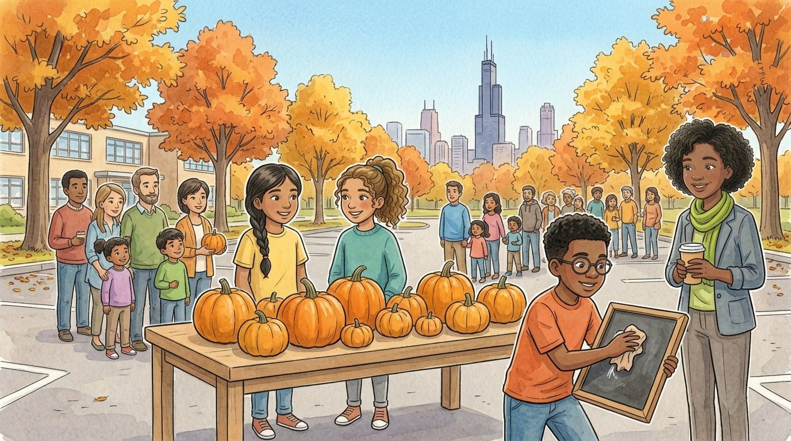

Grade 6 · Social studies · SS.6-8.EC.6
The pumpkin price mystery
A story about a class pumpkin stand and how supply and demand change prices.
El misterio del precio de las calabazas. Un cuento sobre un puesto de calabazas de la clase y cómo la oferta y la demanda cambian los precios.
Key words you will learn
Tap a green word to see what it means.
Toca una palabra verde para ver qué significa. Con la ayuda activada, verás también la definición en español.
The story
El cuento está en inglés. Pulsa «Listen to the story» para escucharlo y toca las palabras verdes cuando no entiendas una.
Every October, the sixth grade ran a pumpkin stand at the school's fall festival. This year, a farm sold them 100 pumpkins for two dollars each. "We'll sell them for five dollars," said Daniel. "Easy profit." Ms. Haddad smiled. "Let's see what the says."
On the first Saturday, two weeks before Halloween, a line of families stretched across the parking lot. By noon, they had sold 60 pumpkins. "Everybody wants a pumpkin right before Halloween," said Salma. "That's ," said Ms. Haddad. "How much people want something and are willing to pay for it."
But there were only 40 pumpkins left and a long line of people. "We're going to run out," said Athena. "When buyers want more than sellers have, there's a ," said Ms. Haddad. "What do you think happens to the ?" Daniel erased the chalkboard. Seven dollars. People still bought them, and the last pumpkin was gone by two o'clock.
"Are we being unfair?" asked Salma. "That's a good question to ask," said Ms. Haddad. "When there's a shortage, sellers can often raise the price, and some buyers decide to wait or to buy somewhere else. Higher prices also tell farmers that people want more pumpkins." So the class bought 100 more pumpkins for the next Saturday.
"Now our is bigger," said Athena. "We have more pumpkins to sell." But on the next Saturday, a farm stand opened across the street, selling pumpkins too. Families had more choices, and the line at the school stand was short. Daniel kept the price at seven dollars. By noon, they had sold only twelve.
"Why isn't anyone buying?" said Daniel. "Now you have more pumpkins than buyers want at that price," said Ms. Haddad. "That's a . When there's a surplus, sellers usually have to lower the price." Daniel sighed and wrote four dollars. By the end of the day, they had sold 70 in all.
On the day after Halloween, they still had 30 pumpkins. Daniel wrote one dollar on the chalkboard, and still nobody came. "After Halloween, the demand for pumpkins drops a lot," said Ms. Haddad. "People don't need them anymore." "So the same pumpkin is worth seven dollars one week and almost nothing the next?" said Daniel. "Exactly. The price depends on supply and demand."
In the end, the class sold the last pumpkins to the school cafeteria for pumpkin muffins, and they still made a profit. Daniel added up the money. "Fine," he said. "The market wins." Athena handed him a muffin. "And the muffins win too."
Pause to connect
Visual arts · VA:Cn11.1.6
Look at The Harvesters, painted by Pieter Bruegel the Elder in 1565, in what is now Belgium. It shows a wheat harvest at the end of summer.
Observa Los segadores, pintado por Pieter Bruegel el Viejo en 1565, en lo que hoy es Bélgica. Muestra una cosecha de trigo al final del verano.
See the painting (The Metropolitan Museum of Art) (opens in a new tab)
What you will see: A golden field of wheat fills most of the painting. Some workers cut the wheat with long blades, others tie it into bundles and carry it away. Under a tree, a group rests and eats lunch while one man sleeps. Far away, you can see a village, a church and ships on the water.
Lo que verás: Un campo dorado de trigo llena casi toda la pintura. Algunos trabajadores cortan el trigo con guadañas y otros lo atan en manojos y se lo llevan. Bajo un árbol, un grupo descansa y come mientras un hombre duerme. A lo lejos se ven un pueblo, una iglesia y barcos en el agua.
- How many different jobs can you find in the painting? Where do you think the wheat goes after the harvest?¿Cuántos trabajos distintos encuentras en la pintura? ¿A dónde crees que va el trigo después de la cosecha?
- If the harvest is very big one year, what would happen to the price of bread? What if a storm ruined the harvest?Si un año la cosecha es muy grande, ¿qué pasaría con el precio del pan? ¿Y si una tormenta arruinara la cosecha?
Think about it, then answer in your notebook or talk it over with someone at home.
Check your thinking
You can find people cutting, tying, carrying, resting and eating, and even someone walking to the village. The wheat would be turned into flour and bread, and some could travel by ship to be sold far away. A big harvest means a bigger supply of wheat, so the price of bread would probably go down. A ruined harvest means a smaller supply and a shortage, so the price would go up.
Glossary
- supply
- How much of a product sellers have and are willing to sell.
- oferta: Cuánto de un producto tienen los vendedores y están dispuestos a vender.
- demand
- How much of a product buyers want and are willing to buy.
- demanda: Cuánto de un producto quieren los compradores y están dispuestos a comprar.
- price
- The amount of money a buyer pays for a product.
- precio: La cantidad de dinero que un comprador paga por un producto.
- shortage
- When buyers want more of a product than sellers have.
- escasez: Cuando los compradores quieren más de un producto del que tienen los vendedores.
- surplus
- When sellers have more of a product than buyers want.
- excedente: Cuando los vendedores tienen más de un producto del que quieren los compradores.
- market
- Any place where buyers and sellers meet to trade.
- mercado: Cualquier lugar donde compradores y vendedores se encuentran para comerciar.
Questions
Choose the correct answer. If you make a mistake, the story shows you where the answer is.
Elige la respuesta correcta. Si te equivocas, el cuento te muestra dónde está la respuesta.
-
Question A. What does demand mean in the story?
¿Qué significa demanda en el cuento?
Demand is how much people want something and are willing to pay for it.
-
Question B. What is a shortage?
¿Qué es una escasez?
When buyers want more than sellers have, there is a shortage.
-
Question C. Why did the class's supply get bigger?
¿Por qué creció la oferta de la clase?
The class bought 100 more pumpkins, so they had more pumpkins to sell.
-
Question D. What usually happens to the price when there's a surplus?
¿Qué suele pasar con el precio cuando hay un excedente?
When there is a surplus, sellers usually have to lower the price.
-
Question E. Why did no one buy pumpkins after Halloween?
¿Por qué nadie compró calabazas después de Halloween?
After Halloween, the demand for pumpkins drops a lot, because people don't need them anymore.
Challenge: explain your thinking
Predict the price
Predict what would happen to the price of pumpkins in each case, and explain using supply or demand: (1) a storm destroys many pumpkin farms; (2) a famous chef says pumpkin soup is the best food in the world.
Predice el precio. Predice qué pasaría con el precio de las calabazas en cada caso y explica usando la oferta o la demanda: (1) una tormenta destruye muchas granjas de calabazas; (2) un chef famoso dice que la sopa de calabaza es la mejor comida del mundo.
Answer in your notebook or talk it over with a classmate. Use evidence from the story.
Responde en tu cuaderno o coméntalo con un compañero. Usa evidencia del cuento.
Check your thinking
(1) The supply goes down, because there are fewer pumpkins to sell. With fewer pumpkins and the same number of buyers, there is a shortage, so the price goes up. (2) The demand goes up, because more people want pumpkins. If the supply stays the same, the price goes up too.
Go further
Salma asked if raising the price was unfair. Sometimes, after a disaster, sellers raise the price of water or gas very high. Should there be limits on prices at times like that? Give one reason for and one reason against.
Para ir más lejos. Salma preguntó si subir el precio era injusto. A veces, después de un desastre, los vendedores suben muchísimo el precio del agua o de la gasolina. ¿Debería haber límites a los precios en esos momentos? Da una razón a favor y una en contra.
Check your thinking
For limits: people need water and gas to stay safe, and very high prices can hurt families who can't pay. Many states, including Illinois, have rules against price gouging during emergencies. Against limits: high prices can push sellers to bring more supplies from far away and help people buy only what they need. Economists disagree, so a good answer explains both sides and then takes a position.